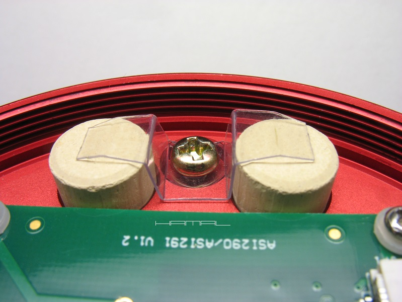
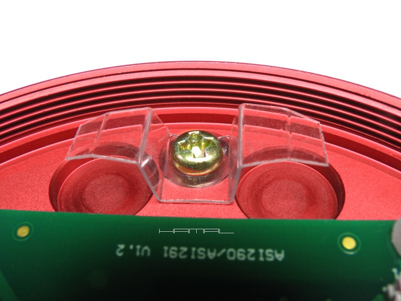
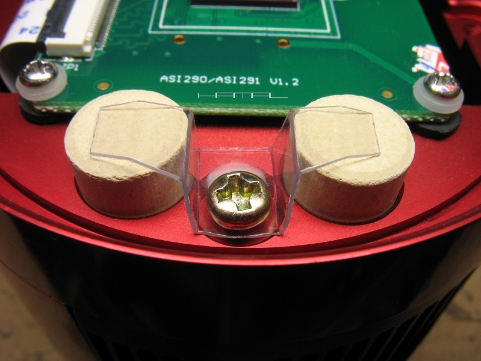

|
GENEZA . Firma ZWO w swoich pierwszych chłodzonych kamerkach ASI z nakręcanym na gwint frontem przyjęła tragiczne w skutkach rozwiązanie blokowania pastylek desykantów. Pomysł polegał na tym, aby użytkownik, po ulokowaniu pastylek w dedykowanych zagłębieniach (zwróconych przyklejoną do desykantów specjalną pianką do góry), zakręcił ostrożnie wieko, a rzeczona pianka, ślizgając się po obracającym się wieku, wypełniając zbędną przestrzeń, sprawi, że pastylki nie będą latać luźno w komorze, co uchroni przed ich odkruszaniem się, i jednocześnie zanieczyszczaniem pyłem komory sensora. Niestety, jak pokazało wiele prezentowanych przez użytkowników przykładów, pianka z czasem przyklejała się do wieka, i przy próbie jego odkręcenia, desykanty ustawiały się w swoich zagłębieniach po skosie, blokując skutecznie jego odkręcenie. Wielu zdesperowanych użytkowników użyło większej siły, co skończyło się tym, że pastylki desykantu ulegały skruszeniu i zasypywały całą komorę matrycy swoimi szczątkami (sam tego doświadczyłem). Jeśli posiadasz wspomniany starszy model kamerki ZWO ASI nie jesteś zdany na przytoczone niebezpieczne rozwiązanie, ponieważ pomiędzy dedykowany zagłębieniami znajduje się gwintowany otwór, a to już otwiera nam drogę do zupełnie innego bezpiecznego sposobu blokowania pastylek na swoim miejscu. WYKONANIE . Do stworzenia proponowanego uchwytu będzie nam potrzebne twarde i elastyczne pleksi (opakowanie po bieliźnie lub innym produkcie) oraz dwie małe krótkie śrubki, dostosowane do posiadanych w kamerce rozmiarów gwintów i głębokości otworków. Z pleksi wycinamy i kształtujemy prezentowany poniżej element pasowany na wymiar do posiadanych tabletek desykantów, robimy otworek montażowy na śrubkę, a następnie przykręcamy go zgodnie z prezentowanymi poniżej zdjęciami. Takie rozwiązanie sprawia, że tabletki osadzone są trwale, a nadto ich wymiana nie sprawia żadnych problemów, gdyż wystarczy lekko uchylić łapkę trzymadełka, aby wyjąć lub włożyć pastylkę.    
|